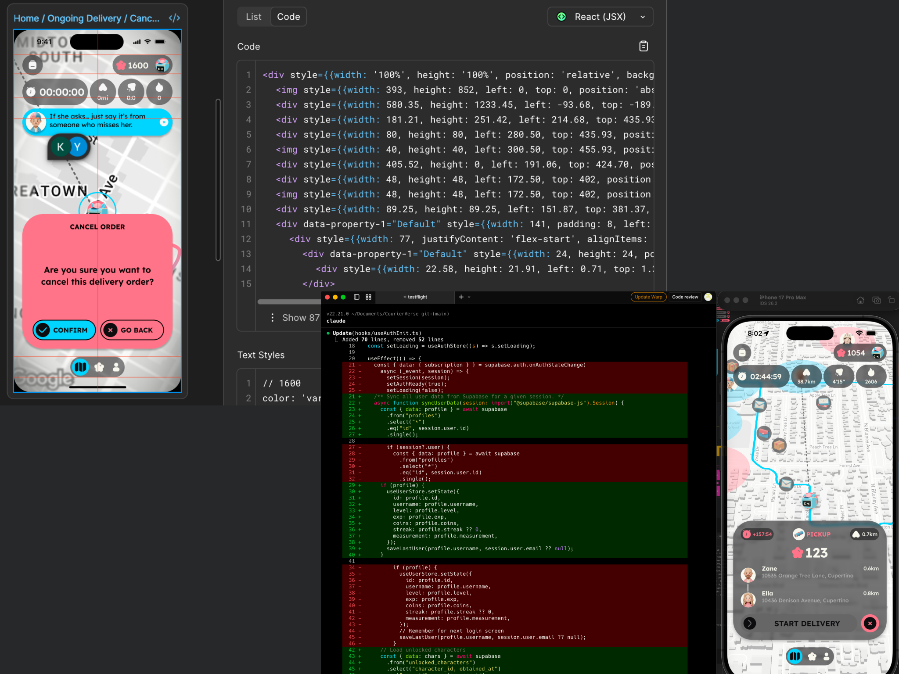

UI/UX Designer, AI Engineer, Graphic Designer
Kia doesn't plan much on paper; He gets a rough version built as fast as he can, then screenshots it and pick apart what's wrong. It usually takes a lot of rounds.
As he said:"Because once that's consistent, the individual screens mostly take care of themselves."
The one thing Kia do settle up in advance is the system: color, type, spacing.
Using AI to generate first, if the outcome cannot meet his expectation, Kia will draw in Figma on himself.
In team working scenario, Kia generally follows the team workflow. On his own part, he will analysis files and resources with AI and make/share the response/result with help of agents. AI could help him express idea better
"I came from graphic design, and I code now, so I tend to prototype in the browser instead of making static mockups."
